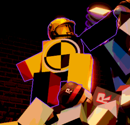
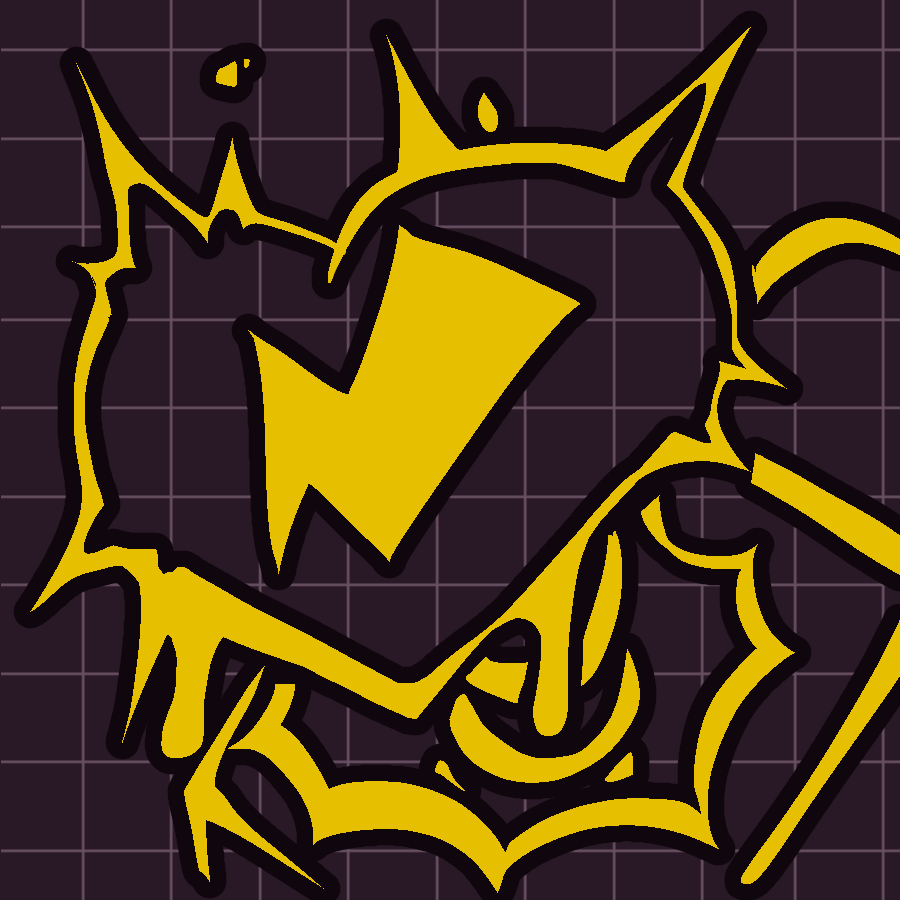
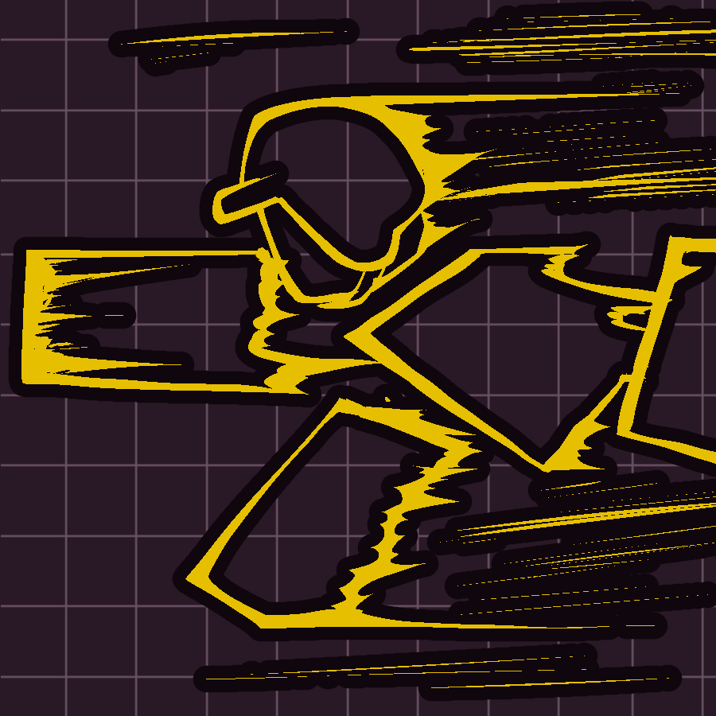
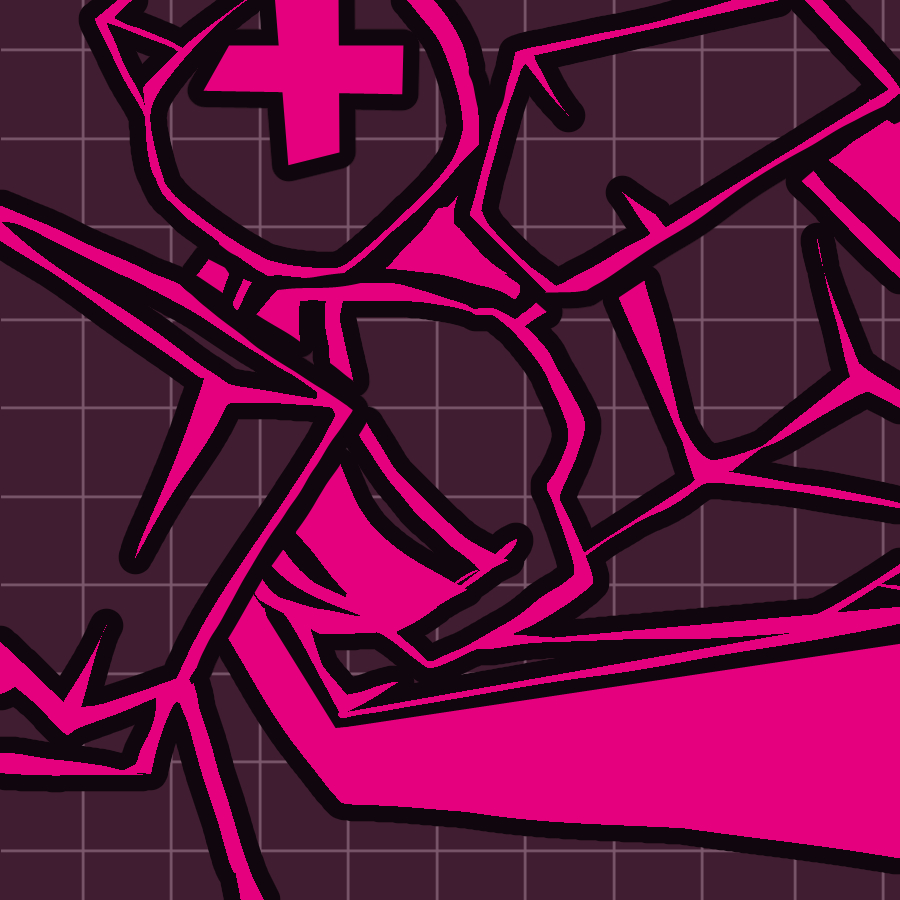
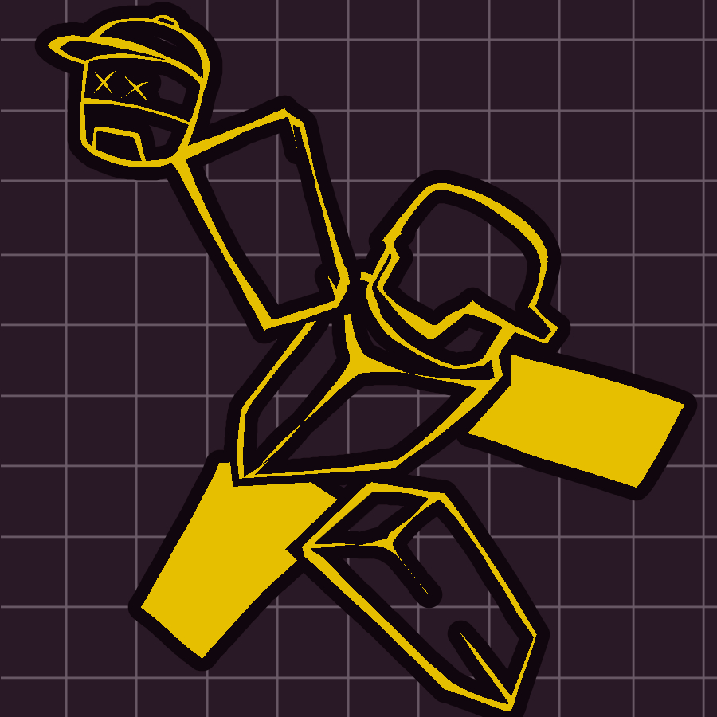
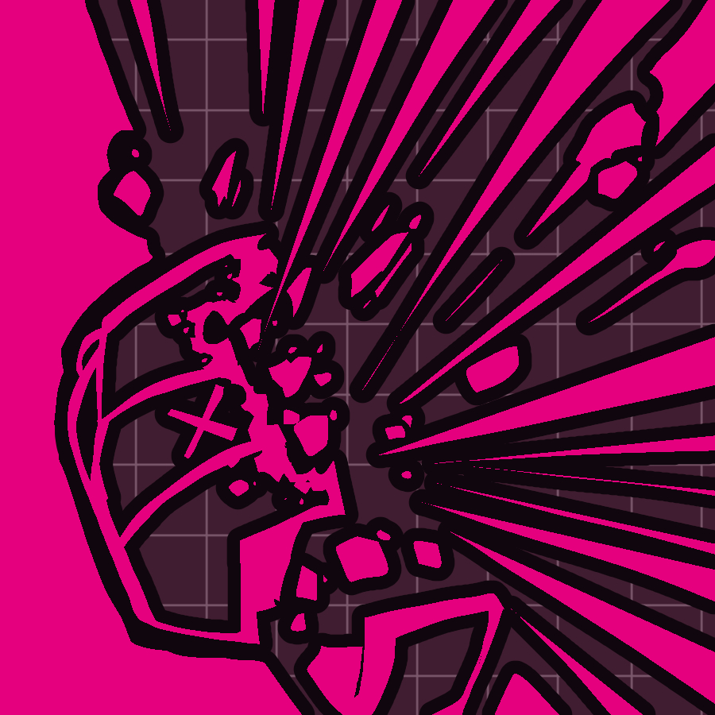
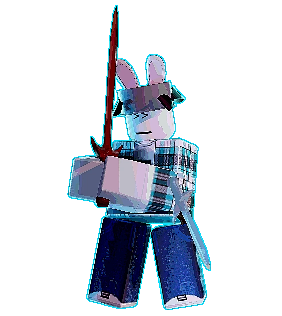
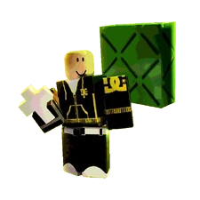
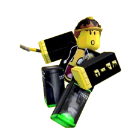
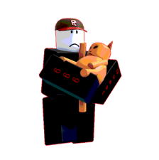

Crash Dummy é a quarta assasina do jogo PWNed by 14:00,custando 550 pontos,tendo 500 de vida e 20 de dano em seu M1.Ela é um protótipo avançado criado para testar até onde a resistencia de um protótipo comum consegue suportar.

Crash Dummy herdou o moveset do pré-rework JX1DX1 , com algumas pequenas alterações.
APARÊNCIA
Ela se parece uma Robloxiana com várias partes amarelas e pretas. Ela tem um símbolo de colisão no centro do torso. Ela usa um capacete. Ela tem um rosto sorridente com um olho amarelo brilhante e linhas saindo da boca, como os outros robôs.
HISTORIA
Crash Dummy era um protótipo aprimorado e instável,criado nas profundezas das instalações da Builder's United para gerar poder absoluto, ultrapassando limites, mais especificamente, para servir de base para futuros modelos, visando atrair mais investidores para a Builder's United . Ela foi abandonada após a replicação das instalações em The Vast , onde permaneceu por tempo demais. Perdida na escuridão, ela criou sua própria luz para brilhar. Apenas um pensamento lhe passava pela cabeça: "Destruir tudo e provar seu valor". Isso levou ao massacre na fábrica, que matou quase todos os robôs ali presentes, com apenas algumas exceções, como o protótipo .
GAMEPLAY
M1
Tipo: Ataque Básico
Tempo de recarga: 1s
Crash Dummy bate com seu braço esquerdo ou direito, causando 18 de dano a qualquer sobrevivente atingido.
OVERDRIVE

Tipo: Habilidade
Tempo de recarga: 35s
Crash Dummy para por um segundo, e fumaça e faíscas amarelas saem de seu corpo durante. Enquanto Overdrive ativado, a Crash Dummy regenera energia mais rapidamente, consome menos energia e todos os sobreviventes são destacados para ela em cores diferentes, dependendo da saúde atual de cada um. Isso também permite que a Crash Dummy use as variantes aprimoradas de"HERE I COME!"e"HEADS UP!"apenas uma vez.O Overdriveficará bloqueado até que esses golpes sejam usados. Após usar as variantes aprimoradas ou o tempo acabar, o efeitodo Overdriveentra em recarga.
HERE I COME!

Tipo: Habilidade
Tempo de recarga: 20s
Crash Dummy toca no capacete duas vezes antes de iniciar uma corrida. Durante essa corrida, ela terá velocidade de movimento aumentada, mas a taxa de giro será limitada e a regeneração de estamina será interrompida. Ao segurar o botão de corrida, a Boneca de Impacto pode derrapar. Enquanto derrapa, ela terá taxa de giro aumentada, mas velocidade reduzida e a hitbox será desativada. Derrapar também consumirá sua estamina muito rapidamente enquanto estiver ativo. Se a Crash Dummy fizer contato com qualquer Sobrevivente durante a corrida, ela causará até 35 de dano e interromperá a corrida. Colidir com uma parede durante a corrida interromperá a corrida e aplicará o efeito Cambaleante.
HERE I COME! (OVERDRIVE)

Crash Dummy tem uma velocidade aumentada, superior à sua versão normal, e causa mais dano, porém com uma taxa de giro pior e sem a capacidade de derrapar para compensar. Se a Crash Dummy colidir com alguém durante a corrida, ela o agarrará e arrastará. Colidir com alguém enquanto já estiver agarrado causará dano e o deixará arremessado. Colidir com uma parede após agarrar alguém causará até 45 de dano, com base na vida atual, e criará uma pequena área de efeito que danificará todos os Sobreviventes próximos. Após a colisão, tanto a Crash Dummy quanto o Sobrevivente ficarão arremessados por um breve momento, embora a Crash Dummy fique brevemente atordoada ao se levantar.
HEADS UP!

Tipo: Habilidade
Tempo de recarga: 15s
Crash Dummy arremessa a cabeça de um Protótipo na direção em que está virada, e a cabeça ricocheteia no chão nessa direção. A cabeça causa até 25 de dano se atingir qualquer Sobrevivente. Essa cabeça de Protótipo pode ricochetear nas paredes 5 vezes, e cada ricochete aumenta o dano em 1,15x.
HEADS UP! (OVERDRIVE)

A cabeça ainda dá 25 de dano mas quando for atingida ela explodira, dando 15 de dano em todos que estiverem no range
AUDIOS
Idle
"T-T-TIME IS NO ISSUE!"
"Cmon! Get a move on!"
"Bring it, Bring it!"
"Let nobody leave. Let N- NOBODY leave."
"Gotta Keep Moving, Gotta Keep Moving!"
Matando alguem (default)
"Losers get no Sympathy!"
"There's no participation trophy's in HELL!"
"You lose!"
"Eat my dust slowpoke!"
"Right in my hands, See that?"
"You must die!"
"Only the fast survive!"
"Are you entertained?"
Matando a Aubree

"Oh the things I've heard!"
"But when it matters most, I WON!!!"
"THE HEADBUTT IS STRONGER THAN THE SWORD."
"Some threat you turned out to be."
Matando o Bradon

"You can run... but you sure as hell can't outrun me."
"Your very existence annoys me."
"Still can't outrun me!"
Matando o Dragondude

"THAT HELMET DIDNT STOP A DAMN. THING."
"A HAMMER?! REALLY?!"
"SHOULD HAVE PULLED-THE-PLUG A LITTLE FASTER!"
Matando o Guest 666

"GOOD LUCK OUTRUNNING ME IN HELL!"
"I WIN! HEHEHHEHE!"
"You run pret-ty fast with that thing on your back!"
"I DONT EVEN WANT TO TOUCH. WHATEVER THE HELL. IS ON YOUR BACK."
.png)